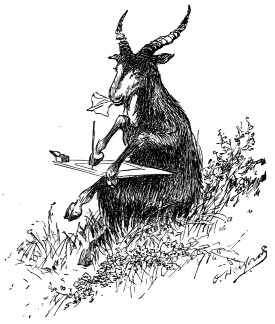

Letters from the wilderness

Yael’s Letters
Turning back to the whole Bible — the amazing, beautiful Hebrew love story — gathered into one quiet place, away from the noise.
— Yael
Get the Letters
One letter at a time, straight to you. No noise, ever.
No spam, ever — unsubscribe anytime. By subscribing you agree to the Privacy Policy.